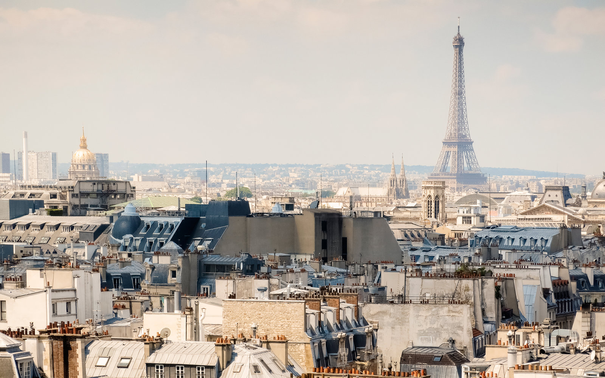
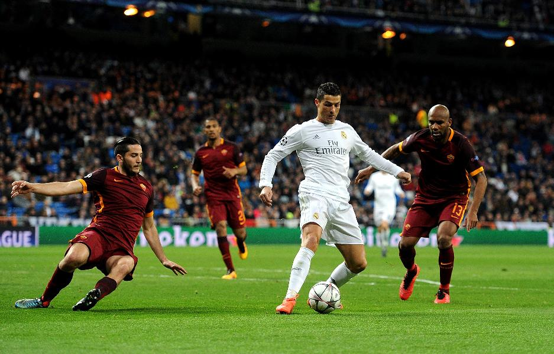
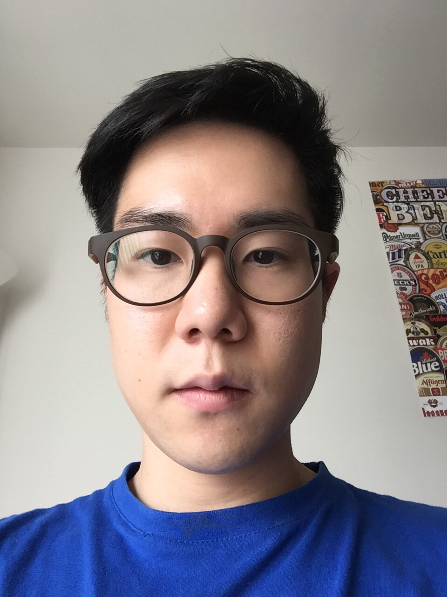
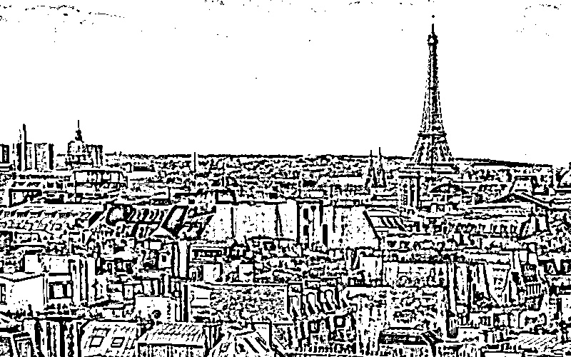
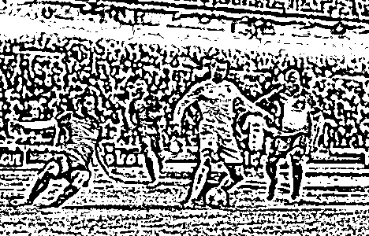
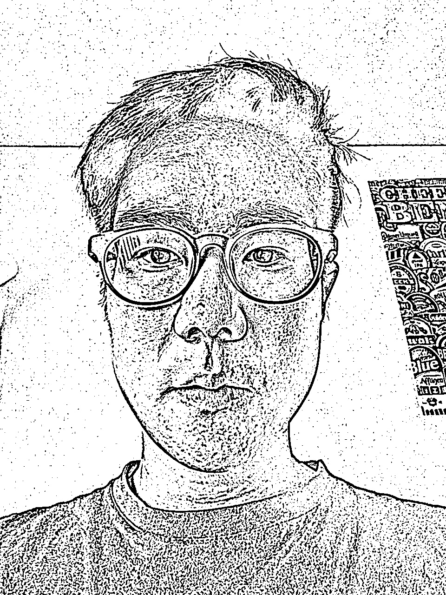
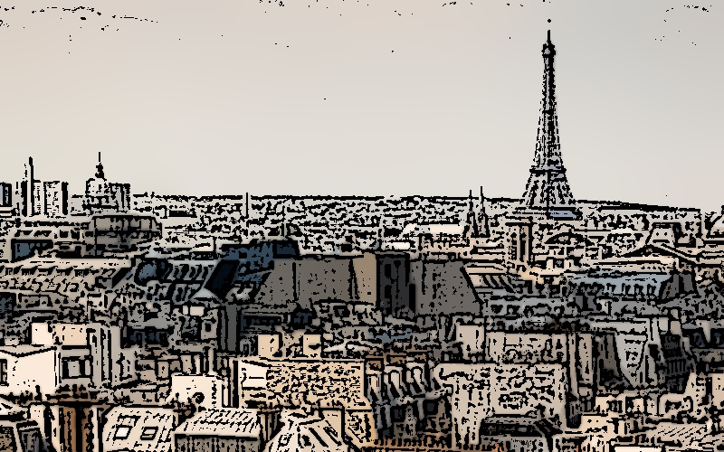
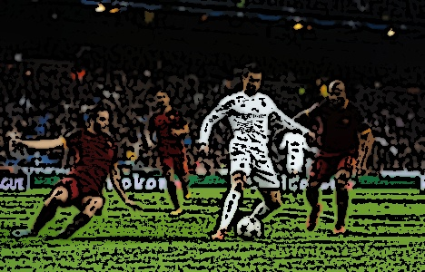
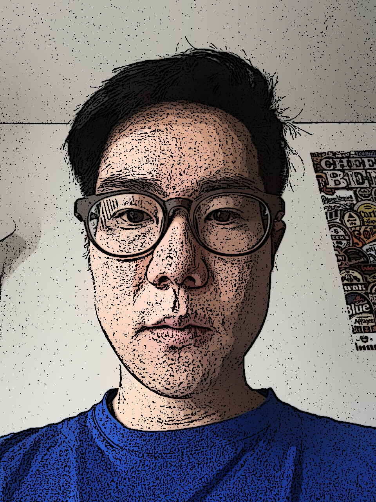

Project Description:
This time I attempted to re-process a given image and give it a "cartoon" filter, with exagerated outlines and color contrast. This is my attempt at incorporating Gaussian Pyramid that we learned in class.Original Image
  
To apply a cartoon filter, we must first determine where all the edges are. Therefore I created a mask that contains all the edges
of the given image. The steps to making a mask is as follows:
1. Convert to grayscale
2. Blur image
3. Detect edges using cv2.adaptiveThreshold()
Here are the masks:
Edge Mask
  
In the next step, for every value of 1 in the mask, I change the color in that specific pixel location.
I made 3 functions to replicate the seasonal changes: changeToSummer, changeToFall and changeToWinter. Here they are:
P.S. You can find my source code here: myproject2.py
I opted to save the mask file under the name of "edge.jpg".
Once I found all the edges, I convert the image back to color. Then I save the final image, and display it:
Final image
  
CREDIT
Images were found at:
http://www.travelandleisure.com/sites/default/files/styles/1600x1000/public/1454344088/Paris-France-Stowe-Writer-Guide-QUOTES0116.jpg?itok=qQQ2dyuw
http://specials-images.forbesimg.com/imageserve/573c6b334bbe6f63618536ea/0x0.jpg?fit=scale&background=000000
{kind=link}
{kind=link}